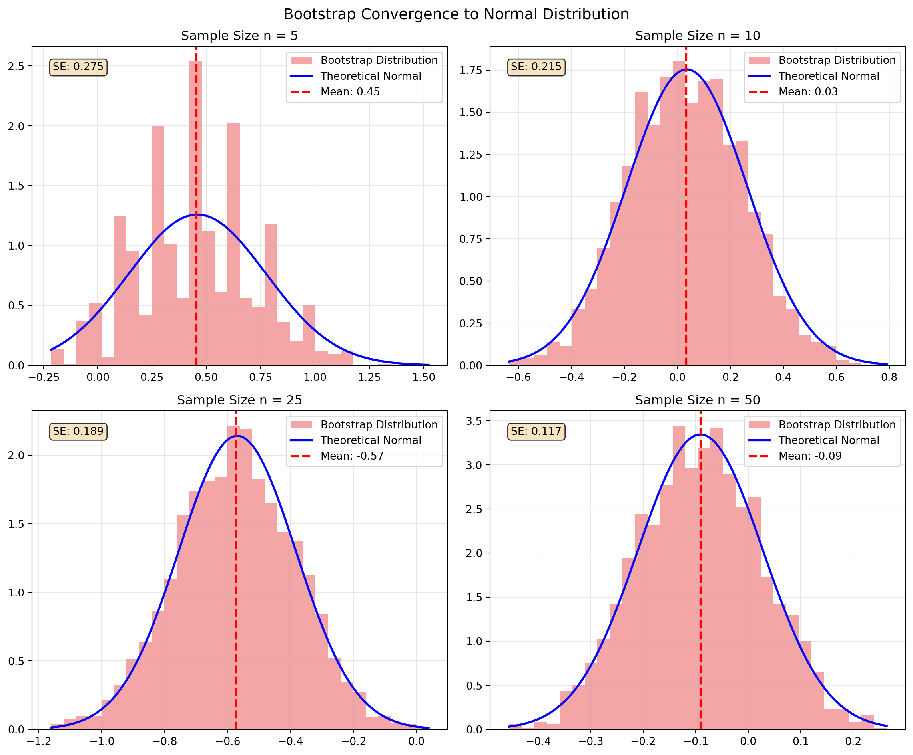
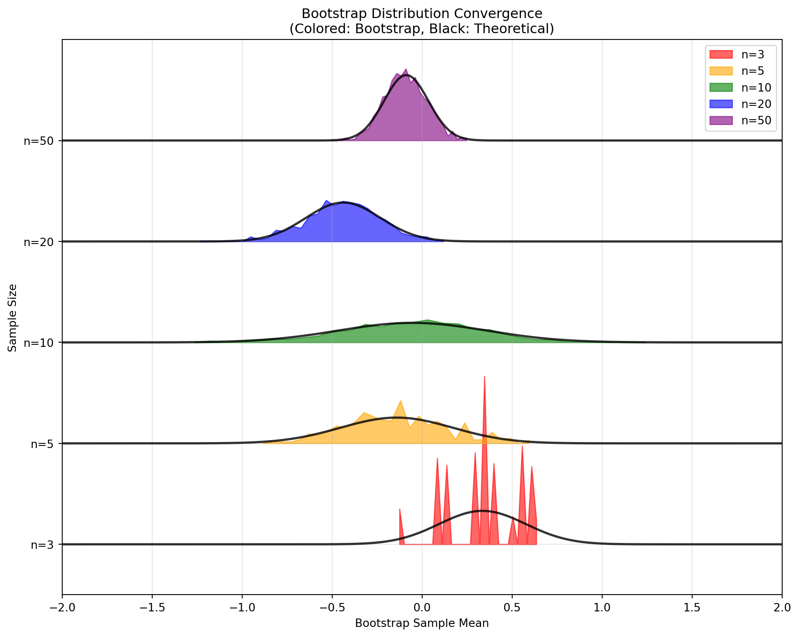
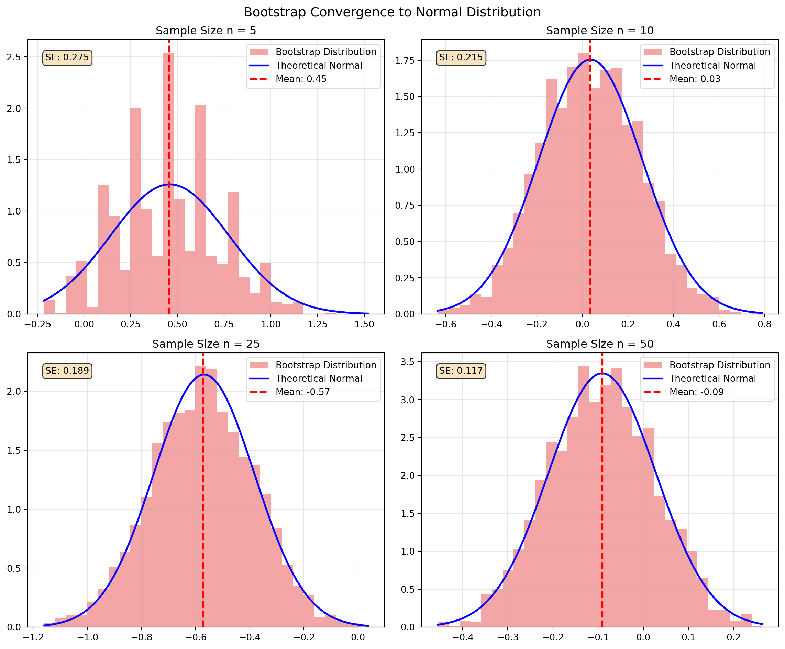
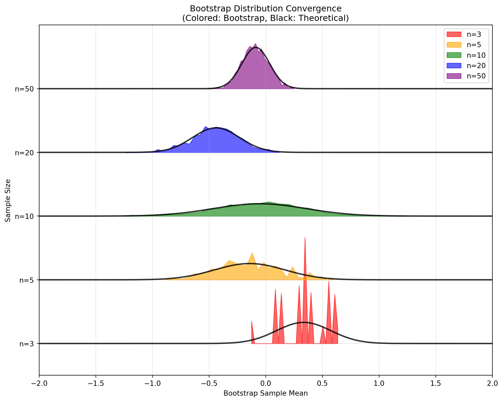
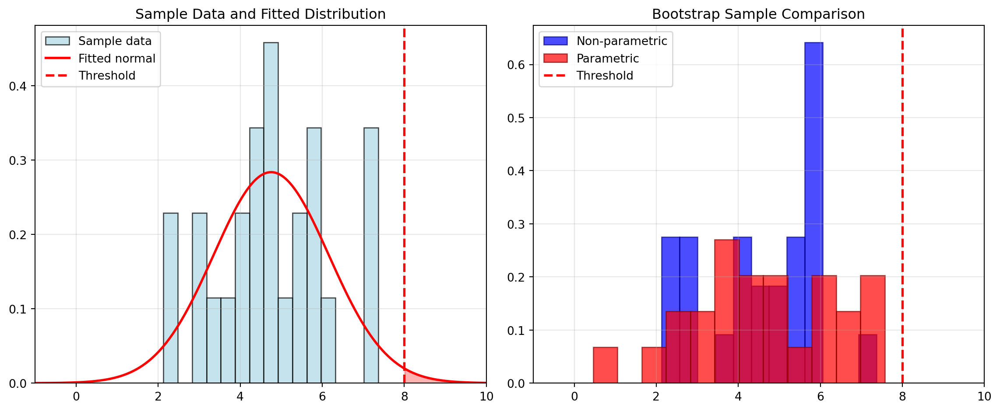

June 18, 2025
Bootstrapping is a powerful statistical resampling method that allows us to estimate the sampling distribution of a statistic without making strong parametric assumptions. Introduced by Bradley Efron in 1979, the bootstrap provides a way to quantify uncertainty, construct confidence intervals, and perform hypothesis tests when traditional analytical methods are difficult or impossible to apply.
The core idea is elegantly simple: if we don’t know the true population distribution, we can use our sample as a proxy for the population and repeatedly resample from it to understand how our statistic would behave across different samples.
The bootstrap principle shares fundamental similarities with particle filtering, which we explored in the previous chapter. Both methods use resampling to approximate complex distributions:
In particle filtering, we saw how resampling addresses particle degeneracy - when most particles have negligible weights. Similarly, bootstrap resampling addresses the problem of not knowing the true population distribution by treating our sample as a “mini-population” to resample from.
Consider a sample \(\mathbf{X} = \{X_1, X_2, \ldots, X_n\}\) drawn from an unknown distribution \(F\). We want to understand the sampling distribution of some statistic \(T(\mathbf{X})\) - for example, the sample mean, median, or a regression coefficient.
The bootstrap principle states that:
The relationship between the sample and the population mirrors the relationship between a bootstrap sample and the original sample.
Mathematically: \[ \text{Population} \rightarrow \text{Sample} \quad \text{as} \quad \text{Sample} \rightarrow \text{Bootstrap Sample} \]
This analogy allows us to approximate the unknown sampling distribution \(F_{T}\) of our statistic using the empirical distribution of bootstrap statistics.
The foundation of non-parametric bootstrapping lies in the empirical distribution function (EDF). For a given sample \(\mathbf{x} = \{x_1, x_2, \ldots, x_n\}\), the EDF is defined as:
\[ \hat{F}_n(t) = \frac{1}{n} \sum_{i=1}^{n} \mathbf{1}(x_i \leq t) \]
The EDF serves as our best non-parametric estimate of the true population distribution \(F\). It assigns equal probability \(1/n\) to each observed data point, effectively treating our sample as if it were the entire population. This approach makes no assumptions about the underlying distributional form, making it widely applicable across different data types and statistical problems.
The non-parametric bootstrap method generates new samples by resampling with replacement from the original data. This process mimics drawing new samples from the population, but uses the empirical distribution as a surrogate for the unknown true distribution.
Input: Original sample \(\mathbf{x} = \{x_1, x_2, \ldots, x_n\}\), number of bootstrap samples \(B\)
For \(b = 1, 2, \ldots, B\):
Output: Bootstrap distribution \(\{T^{*(1)}, T^{*(2)}, \ldots, T^{*(B)}\}\)
Each bootstrap sample \(\mathbf{x}^{*(b)}\) has the same size as the original sample but may contain repeated observations while omitting others entirely. The collection of bootstrap statistics \(\{T^{*(1)}, T^{*(2)}, \ldots, T^{*(B)}\}\) forms an approximation to the sampling distribution of \(T\).
The central principle underlying the bootstrap is that the distribution of bootstrap statistics \(T_n^*\) approximates the true sampling distribution of \(T_n\). Formally, we rely on the approximation that the bootstrap distribution conditional on the observed data mimics the sampling distribution conditional on the true population.
From the bootstrap samples, we can estimate key properties of our statistic:
Bootstrap Estimate of Bias: \[ \text{bias}_{\text{boot}}(T_n) = \mathbb{E}[T_n^* | \mathbf{x}] - T_n = \frac{1}{B} \sum_{b=1}^{B} T^{*(b)} - T_n \]
Bootstrap Estimate of Variance: \[ \text{var}_{\text{boot}}(T_n) = \text{Var}(T_n^* | \mathbf{x}) = \frac{1}{B-1} \sum_{b=1}^{B} (T^{*(b)} - \bar{T}^*)^2 \]
where \(\bar{T}^* = \frac{1}{B} \sum_{b=1}^{B} T^{*(b)}\) represents the mean of the bootstrap statistics.
The bootstrap enables multiple approaches for constructing confidence intervals, each with different assumptions and properties.
When the bootstrap distribution is approximately normal, we can construct confidence intervals using:
\[ \text{CI}_{1-\alpha} = T_n \pm z_{\alpha/2} \cdot \sqrt{\text{var}_{\text{boot}}(T_n)} \]
where \(z_{\alpha/2}\) is the \((1-\alpha/2)\) quantile of the standard normal distribution.
The percentile method uses the empirical quantiles of the bootstrap distribution directly:
\[ \text{CI}_{1-\alpha} = [T^*_{(\alpha/2)}, T^*_{(1-\alpha/2)}] \]
where \(T^*_{(q)}\) denotes the \(q\)-th quantile of the ordered bootstrap statistics. This method requires no distributional assumptions and automatically accounts for skewness in the bootstrap distribution.
Consider the problem of estimating the population mean \(\mu\) from a sample \(\mathbf{x} = \{x_1, \ldots, x_n\}\).
Original Statistic: The sample mean is \(\bar{x} = \frac{1}{n}\sum_{i=1}^n x_i\)
Bootstrap Procedure: For each bootstrap replicate \(b\), we compute the bootstrap sample mean: \[\bar{x}^{*(b)} = \frac{1}{n}\sum_{i=1}^n x_i^{*(b)}\]
Theoretical Properties: The bootstrap method yields several important results:
Unbiasedness: \(\mathbb{E}[\bar{x}^* | \mathbf{x}] = \bar{x}\).
Variance: \(\text{Var}(\bar{x}^* | \mathbf{x}) = \frac{\hat{\sigma}^2}{n}\) where \(\hat{\sigma}^2 = \frac{1}{n-1}\sum_{i=1}^n (x_i - \bar{x})^2\).
This demonstrates that the bootstrap variance estimate matches the classical theoretical result, providing evidence for the method’s validity in this fundamental case.
The bootstrap framework extends naturally to hypothesis testing scenarios. Consider testing the null hypothesis \(H_0: \theta = \theta_0\) against the alternative \(H_1: \theta \neq \theta_0\).
Bootstrap p-value Procedure:
Compute the observed test statistic \(T_{\text{obs}} = T(\mathbf{x})\) from the original sample
Generate bootstrap samples under the null hypothesis (often requiring data transformation to satisfy \(H_0\))
Compute bootstrap test statistics \(\{T^{*(1)}, \ldots, T^{*(B)}\}\) from each bootstrap sample
Calculate the bootstrap p-value: \(p_{\text{boot}} = \frac{\#\{|T^{*(b)}| \geq |T_{\text{obs}}|\}}{B}\)
This approach provides a distribution-free method for computing p-values when the null distribution of the test statistic is unknown or intractable.
While the non-parametric bootstrap is remarkably versatile, several limitations should be considered:
Methodological Limitations:
Boundary effects: Performance degrades when the parameter of interest lies near natural boundaries.
Extreme value behavior: May inadequately capture tail behavior with finite samples.
Independence assumption: Assumes observations are independent and identically distributed.
Computational Considerations:
Computational intensity: Requires \(B \times n\) resampling operations, which can be substantial for large datasets.
Bootstrap sample size: Choice of \(B\) involves trade-offs between accuracy and computational cost.
Data-specific Issues:
Discrete distributions: Can perform poorly with discrete data having few unique values.
Small sample sizes: May not provide adequate approximation when \(n\) is very small.
Despite these limitations, the non-parametric bootstrap remains one of the most widely applicable and robust methods for statistical inference, particularly when distributional assumptions are questionable or when analytical results are unavailable.


The parametric bootstrap assumes your data follows a specific distribution (like normal or exponential). Instead of resampling from your original data, you:
This is like using additional knowledge to guide your bootstrap sampling, similar to how informed proposal distributions improve particle filtering.
Input: Original sample \(\mathbf{x}\), assumed distribution family, number of bootstrap samples \(B\)
For \(b = 1, 2, \ldots, B\):
Output: Bootstrap distribution \(\{T^{*(1)}, T^{*(2)}, \ldots, T^{*(B)}\}\)
Advantages: - More accurate when your distributional assumption is correct - Better at capturing extreme values and tail behavior
- Works better with small sample sizes - Produces smooth distributions even from discrete data
Disadvantages: - Poor performance if you choose the wrong distribution - Can introduce bias from model misspecification
Suppose your data is normally distributed and you want to bootstrap the sample variance \(S^2\).
Step 1 - Estimate parameters: \[\hat{\mu} = \bar{x}, \quad \hat{\sigma}^2 = \frac{1}{n-1}\sum_{i=1}^n (x_i - \bar{x})^2\]
Step 2 - Bootstrap procedure: Generate each bootstrap sample from \(\mathcal{N}(\hat{\mu}, \hat{\sigma}^2)\) and compute the variance.
The parametric bootstrap will approximate the known \(\chi^2\) distribution, while non-parametric bootstrap gives a discrete approximation.
For exponentially distributed data, bootstrap the sample mean \(\bar{X}\).
Parameter estimate: \(\hat{\lambda} = \frac{1}{\bar{x}}\)
Bootstrap procedure: Generate each bootstrap sample from \(\text{Exp}(\hat{\lambda})\).
When the exponential assumption is correct, this provides exact inference using the known \(\chi^2\) distribution properties.

True P(X > 8): 0.0228
Non-parametric estimate: 0.0000 (bias: 0.0228)
Parametric estimate: 0.0104 (bias: 0.0124)| Aspect | Non-parametric | Parametric |
|---|---|---|
| Assumptions | Minimal (i.i.d. data) | Strong (distributional family) |
| Robustness | High | Low (sensitive to model misspecification) |
| Efficiency | Lower when model is correct | Higher when model is correct |
| Tail behavior | Limited by sample | Can extrapolate beyond sample |
| Computational cost | Resampling only | Parameter estimation + generation |
| Small samples | Can be unstable | Often more stable |
The choice between parametric and non-parametric bootstrap depends on the balance between model assumptions and statistical efficiency.
Use Non-parametric Bootstrap when:
Use Parametric Bootstrap when:
Diagnostic Approach: